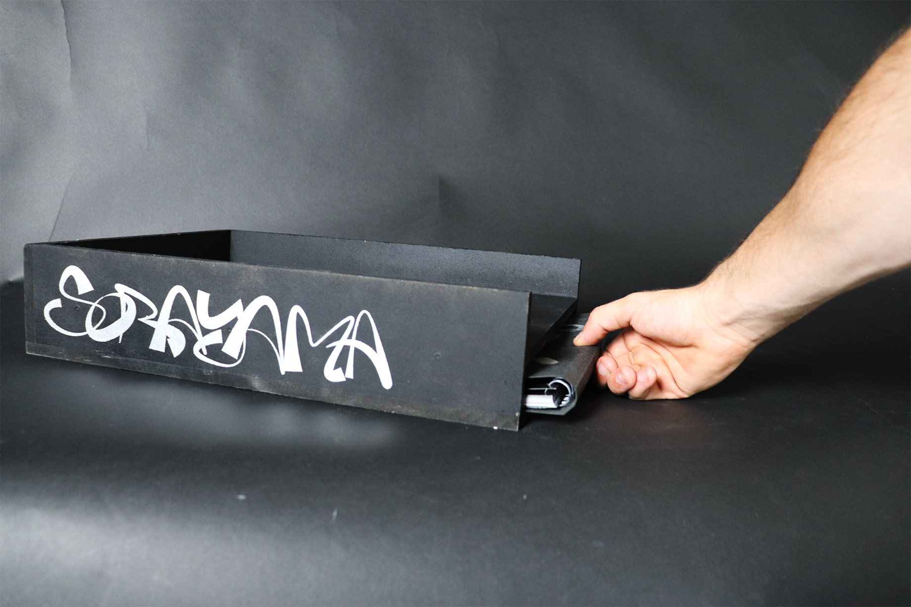
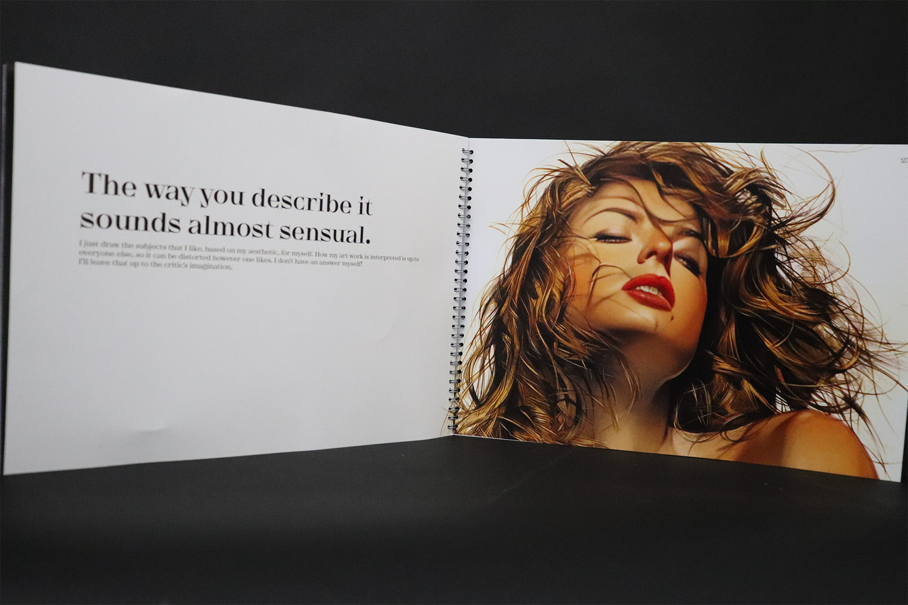
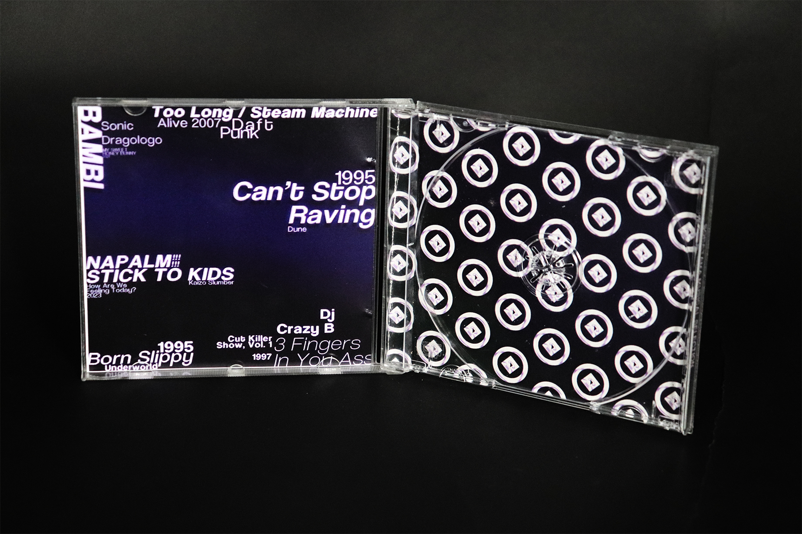

Coffret d'artiste.
Projet de création d'un coffret d'artiste autour du travail d'Ajime Sorayama.
Le coffret contient plusieurs affiches imprimées en grand format,
mettant en avant le style unique de l'artiste japonais, connu pour ses illustrations
futuristes et érotiques de robots et de figures féminines.
Le coffret comporte plusieurs objets graphiques :
- Une collection de 5 affiches 60×80.
- Une édition sur la philosophie de l'artiste et son workflow.
- Une grande édition avec une sélection d'illustrations et extraits d'interview.
- Une playlist sous la forme d'un CD.
- Des stickers inspirés du travail de Sorayama.
Informations techniques :
- Logiciels : Photoshop, InDesign
- Format : 60 × 80 cm
- Année : 2025






